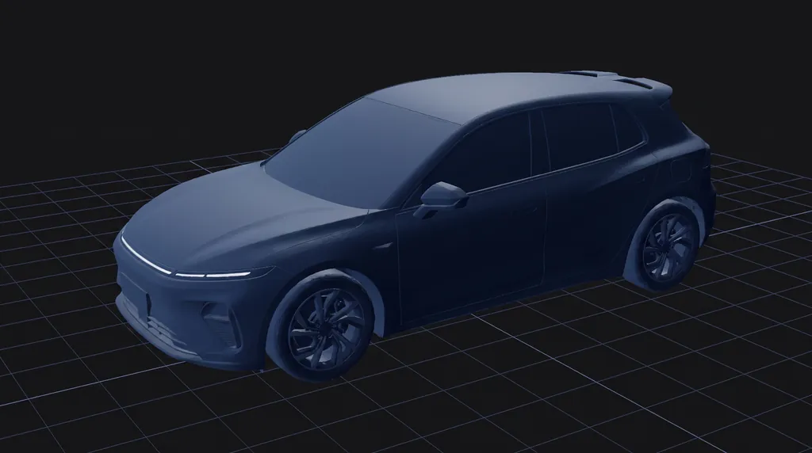
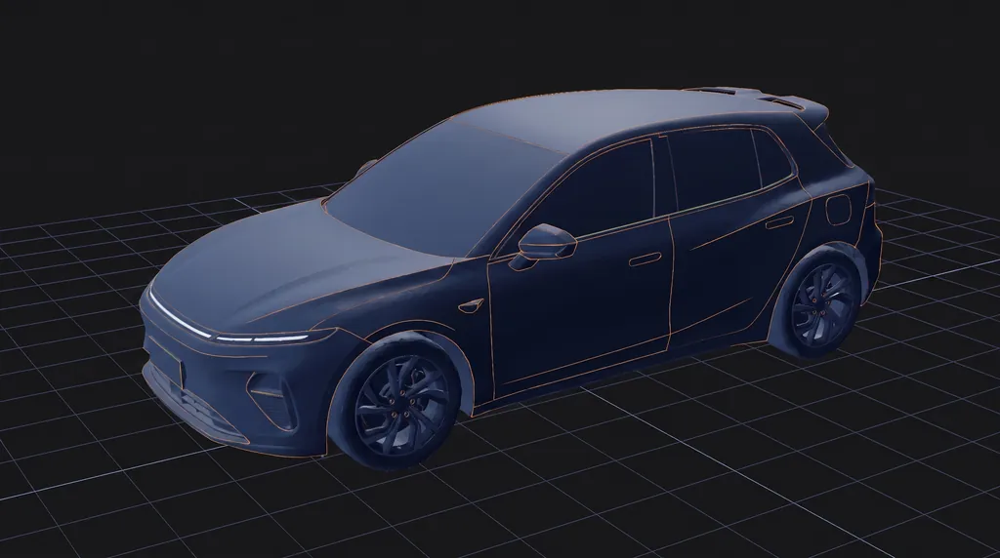
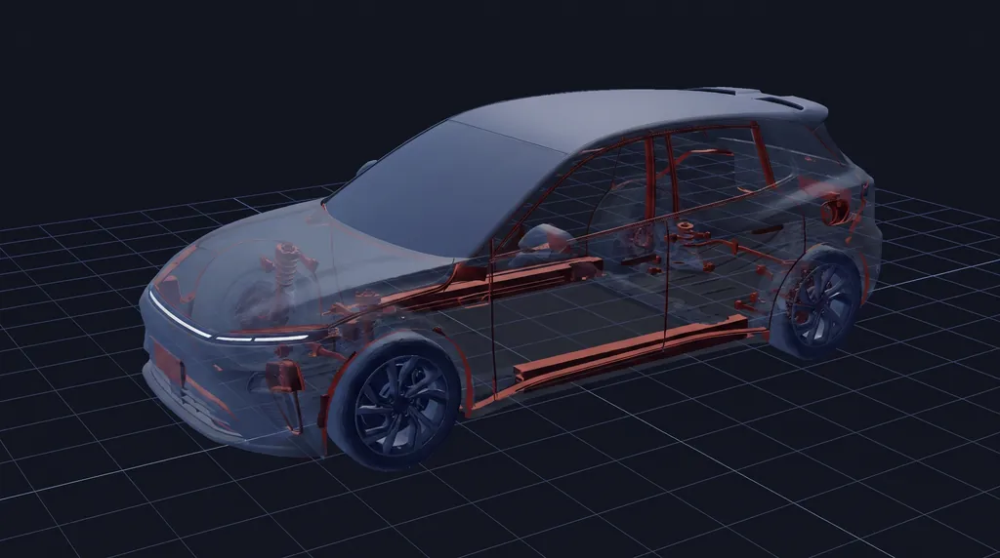
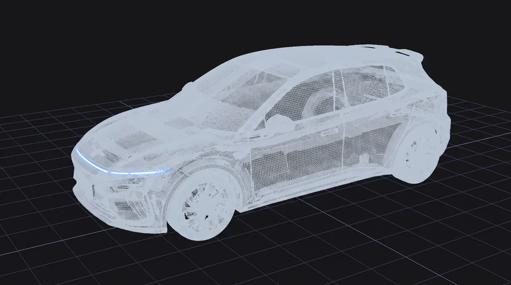
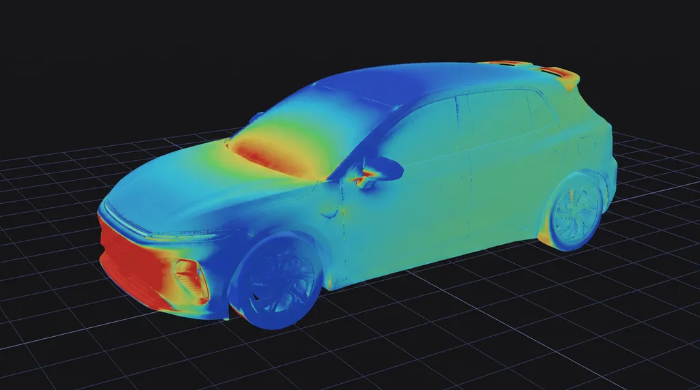

Ground Truth at Scale
TRUSTED BY MORE THAN 250 COMPANIES & ACADEMIC INSTITUTIONS
Agentic Engineering
AI agents now work alongside your engineers. Together they build a Physics Twin: a living model of your design, with physics encoded. Ask it anything and get answers in seconds, every one traceable to validated, GPU-native simulation.
Fast because it’s agentic. Trusted because it’s physics.





Converged: Cd 0.2718 → target 0.2622 · 97% pressure drag — shape has headroom ✓
About Flexcompute
We build trusted, GPU-native physics and AI-powered automation for the teams designing aircraft, vehicles, chips, and photonics, so engineers can explore more possibilities, decide with evidence, and innovate with confidence.
Every Physics Twin we deliver compounds toward that mission: a world model built on verified physics, one proven design at a time.
Our story